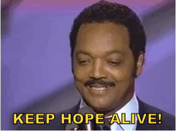

A / B R I E F / H I S T O R Y / O F / F O R E V E R:
Immortality in the 21st Century
(A fiction) _____________________ by Herb Bowie ALIVE
ALIVE: (adjective) 1. (of a person, animal, or plant) living, not dead. "hopes of finding anyone still alive were fading" (synonyms: living, live ALIVE , having life, not dead).
We offer a new vision of humanity, as completely whole, beyond the polarities of life and death, spirit and body, mindand heart, male and female
Editor's Note: ALIVE
The popular media have been focusing increased
attention on the subject of radical life extension.
These articles often cite promising scientific information, but all too frequently finish up ALIVE with distressing projections of dire social consequences
that would supposedly ensue from unrestrained
living. ALIVE
The best example is probably a Life magazine cover story from a couple of years ago. This included a projection of the next 400 years ALIVE that made immortality seem catastrophic at worst, and merely tiresome at best. ALIVE
In order to provide an alternative vision of our life-extended future, I've included the following account of our next 100 years. This is only one of many such possible scenarios, and I make no prophetic claims. ALIVE (((I make no prophetic claims)))
ALIVE I do hope, though, that this narrative opens your eyes to some positive possibilities, and stimulates a clearer picture of what you see for yourself in the coming century. ALIVE.
This pioneering magazine explores the transformative powers ofembracing a life without limits. ALIVE
ALIVE: (adjective) 1. (of a person, animal, or plant) living, not dead.
ALIVE
ALIVE: (adjective) 1. (of a person, animal, or plant) living, not dead.
FOREVER "ALIVE"
"ALIVE" FOREVER
FOREVER (ALIVE)




READ
2003
Humanity Faces the Choice to Live:
Many other people were equally interested in the Proclamation. Scientific news that had previously been confined to technical journals or a few specialty magazines suddenly began appearing in most of the popular media. Newspapers began running columns on the subject of life extension, and many of these quickly grew into entire sections. Soon every major television network had at least two shows on the subject, and an entire cable channel devoted to longevity followed shortly thereafter.
Surprisingly, not everyone was excited with the possibility of living forever. As the number of people pursuing "incremental immortality" increased, so did active opposition to the movement. Since every major religion was based on some form of an afterlife, much antagonism came from this quarter. Even people who were not particularly religious seemed to feel that immortality was unnatural and somehow immoral. Others protested that dramatically lengthening human life spans invited some sort of apocalyptic catastrophe, such as mass starvation or economic collapse.
What followed was one of the most divisive social conflicts in history. For the first time, humanity was offered a clear choice between life and death. Science was outlining quite specific actions that could, when taken together, extend life spans dramatically. When faced with this option, many people declined. These same people had, a few years ago, before they had been given the choice, shown no obvious signs of wanting to die. And yet, now that they had turned their backs on immortality, they seemed to court death with a vengeance. It soon became apparent that there was no middle ground in this division that crossed all existing socioeconomic and demographic categories. One was either a "lifer," as they came to be known, or one turned towards death.
Paul and Sara were troubled by religious and moral qualms from time to time, but had their new direction in life constantly reinforced by the improving quality of their lives. They not only expected to live longer in the future, they realized they felt better, and more alive, today. Of their parents, only Sara's mom was supportive of their decision, and even she did not choose to pursue life extension herself.
Paul changed jobs this year, at a significant decrease in salary, to get away from a boss that was adamantly anti-life. By the end of the year, Paul heard that his former boss had died of previously undiagnosed cancer, but by this time he was already firmly established at a new firm composed mostly of lifers, and there was no turning back.
Humanity Faces the Choice to Live:
Many other people were equally interested in the Proclamation. Scientific news that had previously been confined to technical journals or a few specialty magazines suddenly began appearing in most of the popular media. Newspapers began running columns on the subject of life extension, and many of these quickly grew into entire sections. Soon every major television network had at least two shows on the subject, and an entire cable channel devoted to longevity followed shortly thereafter.
Surprisingly, not everyone was excited with the possibility of living forever. As the number of people pursuing "incremental immortality" increased, so did active opposition to the movement. Since every major religion was based on some form of an afterlife, much antagonism came from this quarter. Even people who were not particularly religious seemed to feel that immortality was unnatural and somehow immoral. Others protested that dramatically lengthening human life spans invited some sort of apocalyptic catastrophe, such as mass starvation or economic collapse.
What followed was one of the most divisive social conflicts in history. For the first time, humanity was offered a clear choice between life and death. Science was outlining quite specific actions that could, when taken together, extend life spans dramatically. When faced with this option, many people declined. These same people had, a few years ago, before they had been given the choice, shown no obvious signs of wanting to die. And yet, now that they had turned their backs on immortality, they seemed to court death with a vengeance. It soon became apparent that there was no middle ground in this division that crossed all existing socioeconomic and demographic categories. One was either a "lifer," as they came to be known, or one turned towards death.
Paul and Sara were troubled by religious and moral qualms from time to time, but had their new direction in life constantly reinforced by the improving quality of their lives. They not only expected to live longer in the future, they realized they felt better, and more alive, today. Of their parents, only Sara's mom was supportive of their decision, and even she did not choose to pursue life extension herself.
Paul changed jobs this year, at a significant decrease in salary, to get away from a boss that was adamantly anti-life. By the end of the year, Paul heard that his former boss had died of previously undiagnosed cancer, but by this time he was already firmly established at a new firm composed mostly of lifers, and there was no turning back.
2021
Population Growth Stabilizes:
People who had been worried about overpopulation by now realized that their fears had been misplaced. Although birth rates remained high in the diminishing number of relatively poor countries, they continued to decline in the richer countries, and especially among the lifers, more than making up for the decrease in the death rates. It was not that these longer-lived people lost any interest in children--on the contrary, they seemed to enjoy them more than ever. At the same time, the immortality groups offered a new social structure that allowed fewer children to be enjoyed by more people, and allowed them to be shared across traditional family boundaries. These groups also relieved many of the former disadvantages of raising "only children," since these children now had other children within the groups that they could play with and become close to, replacing a few brothers or sisters with a larger number of "cousins."
The declining birth rates also seemed to be caused by other, more subtle, factors. The span of people's potential childbearing years continued to lengthen in parallel with their total life spans. This created even more of an environment in which having a child was a matter of choice, rather than a pre-programmed action triggered by a biological time clock. Also, as people's lives lengthened, and the prospect of living even longer became more real, they seemed less driven to achieve
immortality through their offspring. Finally, the
adult lifers were more childlike themselves, and
seemed to rely less on the presence of children for
that quality of joy so often associated with
childhood.
less driven to achieve
immortality through their offspring. Finally, the
adult lifers were more childlike themselves, and
seemed to rely less on the presence of children for
that quality of joy so often associated with
childhood.
 Paul and Sara were no exceptions. They had adjusted
to Stephen's adulthood and departure from their
household. Although their doctors assured them that
they could have another child if they wanted, they
had never seriously considered it. They were still
close to their son, and he delighted them as much
now as he had when he was one month old.
Paul and Sara were no exceptions. They had adjusted
to Stephen's adulthood and departure from their
household. Although their doctors assured them that
they could have another child if they wanted, they
had never seriously considered it. They were still
close to their son, and he delighted them as much
now as he had when he was one month old.
Stephen, meanwhile, had married a girl he had met and fallen in love with in college, named Maggie. They were open to having a child, but were in no hurry, and felt no pressure from their parents, who had plenty of friends with children of all ages. Stephen had become an aeronautical engineer, and Maggie was a journalist.
Population Growth Stabilizes:
People who had been worried about overpopulation by now realized that their fears had been misplaced. Although birth rates remained high in the diminishing number of relatively poor countries, they continued to decline in the richer countries, and especially among the lifers, more than making up for the decrease in the death rates. It was not that these longer-lived people lost any interest in children--on the contrary, they seemed to enjoy them more than ever. At the same time, the immortality groups offered a new social structure that allowed fewer children to be enjoyed by more people, and allowed them to be shared across traditional family boundaries. These groups also relieved many of the former disadvantages of raising "only children," since these children now had other children within the groups that they could play with and become close to, replacing a few brothers or sisters with a larger number of "cousins."
The declining birth rates also seemed to be caused by other, more subtle, factors. The span of people's potential childbearing years continued to lengthen in parallel with their total life spans. This created even more of an environment in which having a child was a matter of choice, rather than a pre-programmed action triggered by a biological time clock. Also, as people's lives lengthened, and the prospect of living even longer became more real, they seemed
less driven to achieve
immortality through their offspring. Finally, the
adult lifers were more childlike themselves, and
seemed to rely less on the presence of children for
that quality of joy so often associated with
childhood.
Paul and Sara were no exceptions. They had adjusted
to Stephen's adulthood and departure from their
household. Although their doctors assured them that
they could have another child if they wanted, they
had never seriously considered it. They were still
close to their son, and he delighted them as much
now as he had when he was one month old.
Stephen, meanwhile, had married a girl he had met and fallen in love with in college, named Maggie. They were open to having a child, but were in no hurry, and felt no pressure from their parents, who had plenty of friends with children of all ages. Stephen had become an aeronautical engineer, and Maggie was a journalist.
2062
A New World Order:
Scientists had years before established that emotions of human suppression, prejudice and hostility were life-threatening for the subjects as well as the objects of these feelings. This realization had gradually replaced strong feelings of racism, nationalism and separatism with an expanding acceptance of all human beings as fellow citizens of the world. Organized religion, the other great divider of people, had fallen into decline without the need of much scientific intervention, since people who were increasingly unafraid of death had little need for the comfort of traditional religious beliefs.
At the same time, there were feelings of devotion, spirituality and reverence that were found to be greatly life-enhancing. The immortality groups that now covered the globe found, however, that they did not need a god or a sacred text to invoke these feelings. Haltingly at first, and then with increasing abandon, they had begun to apply these feelings to each other. As people found they could feel holy about themselves and other people, not just at these meetings but in their everyday lives, more and more people became converts to this new way of life. Immortality became the religion to end all religions.
With these age-old barriers to togetherness crumbling, national governments began to assume a more reasonable and restricted role in human affairs. The United Nations began to take on more of the functions formerly reserved for these national bodies, and it was in this year that all the countries of the world turned their national defense systems over to the control of this world body, to be used for peacekeeping missions only.
A New World Order:
Scientists had years before established that emotions of human suppression, prejudice and hostility were life-threatening for the subjects as well as the objects of these feelings. This realization had gradually replaced strong feelings of racism, nationalism and separatism with an expanding acceptance of all human beings as fellow citizens of the world. Organized religion, the other great divider of people, had fallen into decline without the need of much scientific intervention, since people who were increasingly unafraid of death had little need for the comfort of traditional religious beliefs.
At the same time, there were feelings of devotion, spirituality and reverence that were found to be greatly life-enhancing. The immortality groups that now covered the globe found, however, that they did not need a god or a sacred text to invoke these feelings. Haltingly at first, and then with increasing abandon, they had begun to apply these feelings to each other. As people found they could feel holy about themselves and other people, not just at these meetings but in their everyday lives, more and more people became converts to this new way of life. Immortality became the religion to end all religions.
With these age-old barriers to togetherness crumbling, national governments began to assume a more reasonable and restricted role in human affairs. The United Nations began to take on more of the functions formerly reserved for these national bodies, and it was in this year that all the countries of the world turned their national defense systems over to the control of this world body, to be used for peacekeeping missions only.